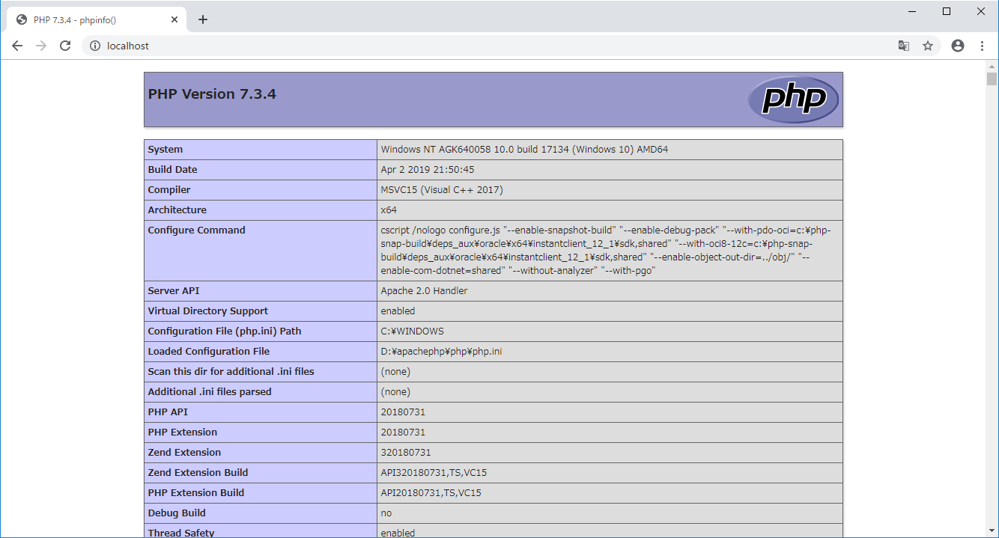
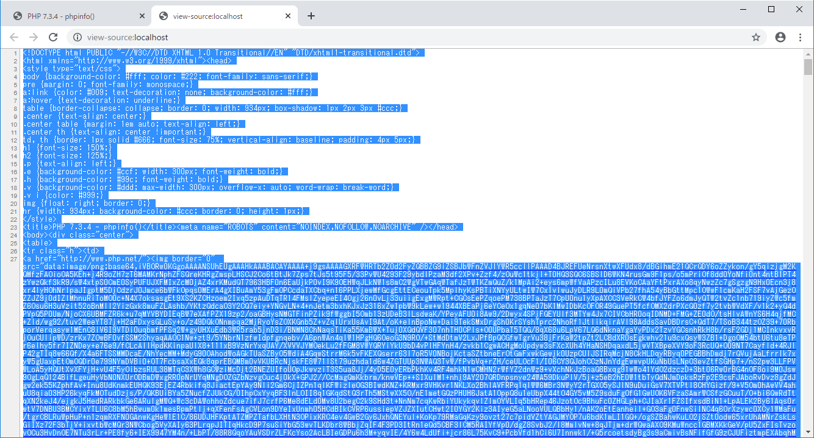
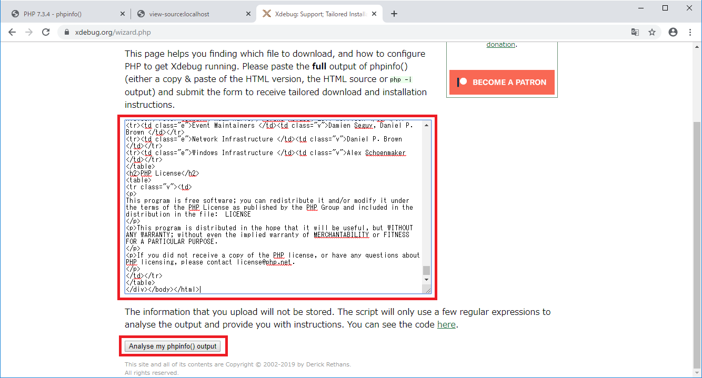
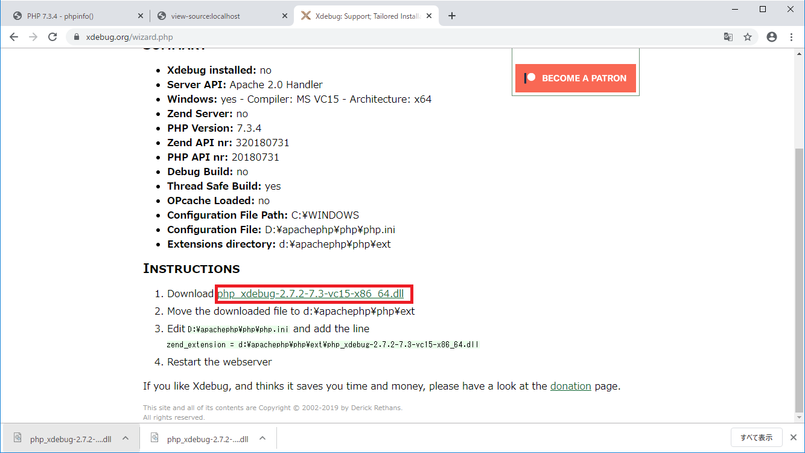
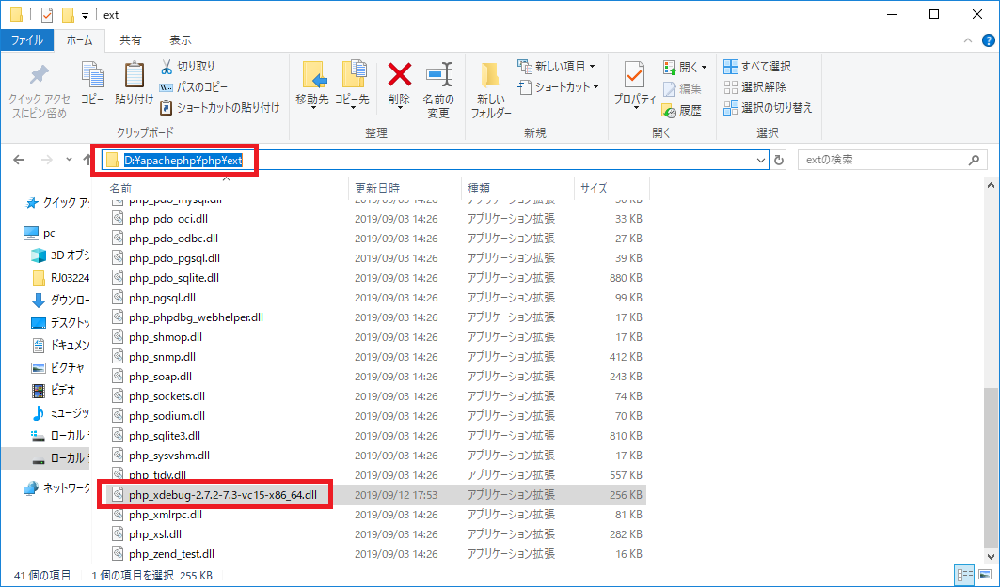
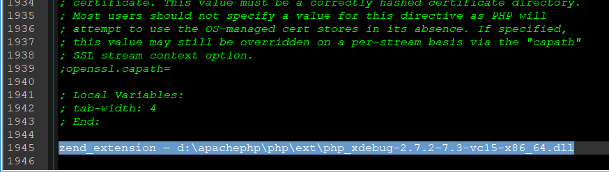
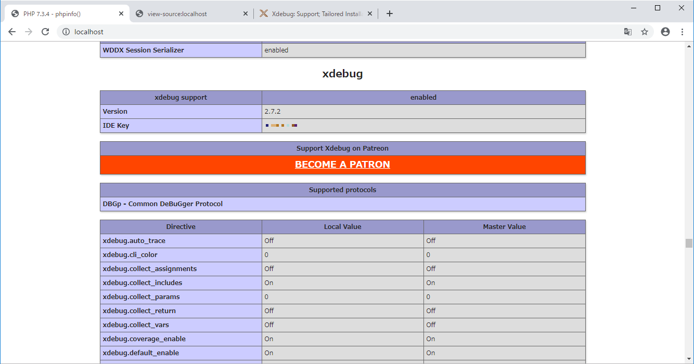
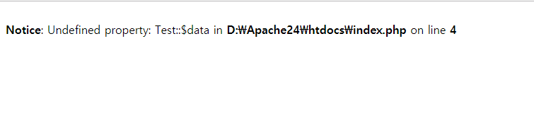
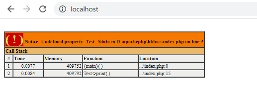
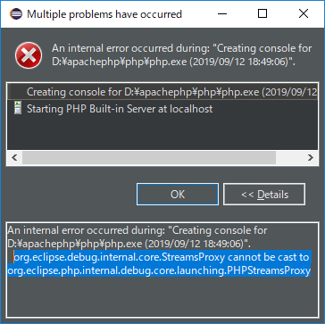

こんにちは。明月です。
前述でPHPでデバッグする方法に関して説明したことがあります。
link - [PHP] データ確認関数(var_dump, debug_zval_dump, print_r)
普通、PHPで開発する時にvar_dumpをよく使いますが、var_dumpやエラーが発生する時などのメッセージをもっと正確に分析してくれるライブラリのxDebugがあります。
これからxDebugのライブラリをインストールしましょう。
まず、phpinfoの関数でPHPの環境設定に関して確認しましょう。

上のPHP環境設定のページをソースビューにしてソース全てをセレクトせいてコピーしましょう。(Ctrl + c)

その後、下記のURLに接続してパッケージ検査をしましょう。
ダウンロードパッケージ検査 : https://xdebug.org/wizard.php

その後でパッケージ情報が表示されますが、ダウンロードURLでxdebugライブラリがリンクされ、それを選択してダウンロードしましょう。

(筆者の考えはPHP環境設定情報でPHPバージョンとタイプ(thread safeかthread unsafeか)を正確に分析するようにソースビューのデータをコピーペしたと思います。)
ダウンロードしたファイルをPHPフォルダのextフォルダにコピーしましょう。

そしてphp.iniファイルを修正しましょう。
zend_extension = d:\apachephp\php\ext\php_xdebug-2.7.2-7.3-vc15-x86_64.dll
上のダウンロードしたページの3番をみればiniファイルの一番下に入れてください」と書いているのでコピーペすればよいです。

そしてサーバを再起動してxDebugセッションがあることを確認できます。

xDebugがPHP開発でどのように使うか確認しましょう。
<?php
class Test {
public function print(){
// Testクラスでメンバー変数dataは宣言してない。
echo $this->data;
}
}
$obj = new Test();
?>
<!DOCTYPE html>
<html>
<head><title>title</title></head>
<body>
<?=$obj->print()?>
</body>
</html>
上の例では$obj変数にTestクラスを宣言してbodyの領域でprint関数を呼出しています。
print関数ではTestクラスのdata変数の値を返却していますが、dataの変数は宣言してないです。エラーになるソースですね。
xDebugを設定する前には下記のイメージみたいに出力します。

それがxDebugを設定する後は下記のイメージみたいに出力します。

call stack表示でどこでエラーが発生したかを追跡ができます。前よりもっと詳しい情報が出るので開発する時に楽になると思います。
実は初めxDebugを設定する理由はEclipseでデバック機能を付いて使おうと思いましたがEclipse側でエラーが発生しますね。

原因はEclipseのバグだといいますが、私の場合は関連資料を調べても解決が出来ないです。もし知ってる方がいらっしゃったらお知らせてください。
link - https://xdebug.org/
- [CakePHP] Errorページを設定する方法2020/02/20 03:00:00
- [CakePHP] Transactionを使う方法とEntityクラスを利用してInsert、Update、Deleteする方法2020/02/19 03:00:00
- [CakePHP] ORMのテーブルFetch設定2020/02/18 03:00:00
- [CakePHP] Cakeフレームワークでデータベースに接続する時に使うQuery式とEntityクラス、Tableクラス、ResultSet2020/02/17 08:16:23
- [CakePHP] データベース(MariaDB(Mysql))を接続する方法2020/02/14 03:00:00
- [PHP] namespaceとuse2020/02/13 03:00:00
- [CakePHP] RequestとResponseに関して2020/02/12 03:00:02
- [CakePHP] PHPのCakeからAjax要請がある時、jsonタイプ(json_encode関数)でResponseする方法とControllerでViewを選択する方法2020/02/08 03:00:00
- [CakePHP] MVCフレームワークのCakeをインストールする方法2020/02/07 03:00:02
- [PHP] 自動require及びincludeをする方法(spl_autoload_register)2020/02/05 03:00:00
- [PHP] 匿名関数(ラムダ式)とクロージャ(closure)2020/02/04 03:00:00
- [PHP] PHPのコーディング領域とデザイン領域を分離するテンプレートライブラリ Smarty2020/02/02 03:00:00
- [PHP] Reflection - Variable編2020/02/01 03:00:00
- [PHP] Reflection - Method編2020/01/31 03:00:00
- [PHP] Reflection - Class編2020/01/30 03:00:00
- [Java] メール(javax.mail)を発送する方法2020/03/05 20:07:49
- [Java] クラス複製(Clonable, Reflection)2020/03/05 00:03:19
- [Java] シリアライズ(直列化: Serializable)2020/03/03 00:03:33
- [Java] StringBuilderとStringBufferの差異2020/03/02 07:52:22
- [Java] Compare関数を使う方法2020/02/29 03:00:00
- [Java] 数字フォーマット(お金表示及び小数点以下表示)2020/02/28 03:00:00
- [Java] サーブレット環境で現在の実行ディレクトリを取得する方法2020/02/27 03:00:00
- [Java] 日本語をユニコードに変換して、ユニコードから日本語に変換する方法2020/02/26 03:00:00
- [Java] コンソールからデータを受け取る方法(System.in)2020/02/25 03:00:00
- [Java] Servlet環境でWebSocket通信中、HttpSessionを取得する方法2020/02/24 07:47:20
- [Java] WebSocketでWeb Sessionを使う方法(Broadcast)とウェブチャットの例2020/02/22 03:00:00
- [Java] WebSocket (ウェブソケット)2020/02/21 03:00:00
- [CakePHP] Errorページを設定する方法2020/02/20 03:00:00
- [CakePHP] Transactionを使う方法とEntityクラスを利用してInsert、Update、Deleteする方法2020/02/19 03:00:00
- [CakePHP] ORMのテーブルFetch設定2020/02/18 03:00:00